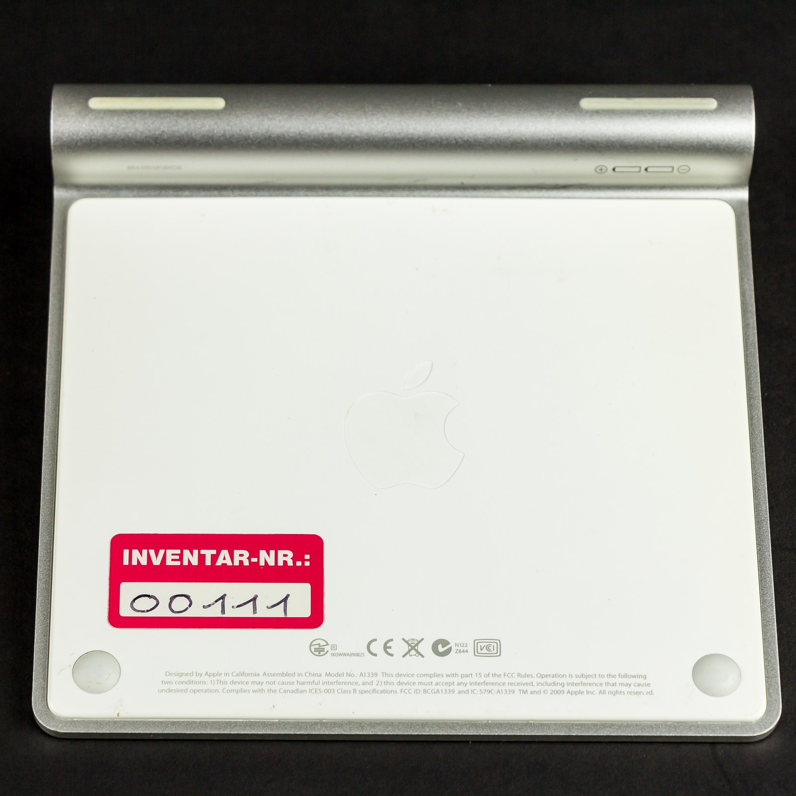

Which Apple mouse, keyboard or trackpad do I have on Windows?
Turn your Apple device over. How it takes power names the model.
A battery door means the 2009 Magic Mouse. A narrow Lightning slot means 2015, a small oval USB-C hole means 2024.
Mice, oldest to newest

030D · 2009 · AA batteries
Magic Mouse v1
A door on the bottom holds two AA batteries.
Make it scroll
0269 · 2015 · Lightning
Magic Mouse v2, sold by Apple as Magic Mouse 2
A narrow slot, the plug older iPhones used.
Make it scroll0323 · 2024 · USB-C
Magic Mouse (2024)
A small oval USB-C hole, like a new phone.
Why this one is hard0310 · AA batteries
Apple Wireless Mouse
Flat top, no touch surface, two AA batteries.
Make it scrollPhotos via Wikimedia Commons: FASTILY, CC BY-SA 4.0; Syced, CC0.
Keyboards and trackpads: check the back edge
A tube with a screw cap means AA batteries. A socket means it charges.

024F · 0250 · 0267 · 026C · 029C
Magic Keyboard
Flat back edge with a socket in it.
Keyboard battery

0239 · 2011 · AA batteries
Apple Wireless Keyboard, 2011

0239 · end of the tube
The cap you unscrew

030E · 2010 · AA batteries
Trackpad with a tube
Photos via Wikimedia Commons: Fletcher, CC BY 4.0; Josh Kehn at English Wikipedia, Karl432, Roadmr, CC BY-SA 4.0; © Raimond Spekking / CC BY-SA 4.0 (via Wikimedia Commons).
Every device side by side
A driver is the software Windows uses to talk to your mouse.
| Device | Code Windows shows | Battery percent | Needs help to scroll | Tested |
|---|---|---|---|---|
| Magic Mouse v1 (2009) | 030D | Yes | Yes, Apple's driver | Yes |
| Magic Mouse v2 (2015) | 0269 | Should work, nobody has confirmed it yet | Yes, Apple's driver | Not yet |
| Magic Mouse (2024) | 0323 | Yes, no driver needed | Yes, and no finished driver exists yet. What works today | Yes |
| Apple Wireless Mouse | 0310 | Should work, nobody has confirmed it yet | Yes, Apple's driver | Not yet |
| Apple Wireless Keyboard (2011) | 0239 | Yes, after a one-time unlock | Keyboards don't scroll | Yes |
| Magic Keyboard | 024F 0250 0267 026C 029C | Should work after the same unlock, unconfirmed | Keyboards don't scroll | Not yet |
| Magic Trackpad | 030E 0265 0324 | Should work, nobody has confirmed it yet | No trackpad driver from us | Not yet |
"Not yet" means nobody has sent a report. Help us test yours.
The sure check: the model number
A1296 is the Magic Mouse v1 with AA batteries. A1657 is the Magic Mouse v2. A3204 is the USB-C Magic Mouse (2024).

A1657 · Magic Mouse v2
What the small print looks like
Tilt it under a lamp.

A1296 · Magic Mouse v1
The cover you slide off
If a cover lifts away in your hand, it's a v1.

A1339 · Magic Trackpad 2010
Trackpads print it too
Photos via Wikimedia Commons: Syced, CC0, close-up cropped by us; FASTILY, CC BY-SA 4.0; © Raimond Spekking / CC BY-SA 4.0 (via Wikimedia Commons).
Common questions
- How do I tell which Magic Mouse I have?
- Turn it over. A battery door means 2009. A narrow Lightning port means 2015. A small oval USB-C port means 2024.
- Why does the 2024 mouse need a different driver?
- Apple's own Windows software never listed the code 0323, so Windows loads no scroll driver for it. The community driver for that model isn't published yet.
- Do keyboards and trackpads scroll too?
- No. Only mice scroll. On a keyboard or trackpad, Magic Tray shows the battery percent.